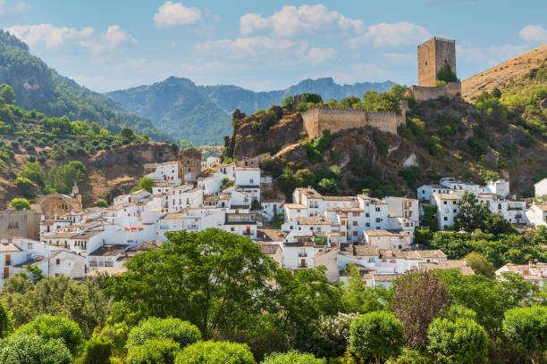
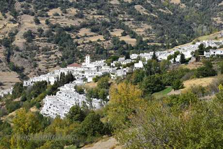
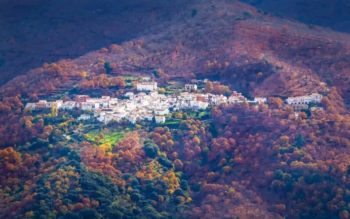

Pueblos Rurales de Andalucía: Un Viaje en el Tiempo
Descubre la magia de los pueblos encalados, sus tradiciones y paisajes montañosos.

El pueblo de Cazorla se halla enclavado en el corazón del Parque Natural de las Sierras de
Cazorla, Segura y Las Villas, el mayor espacio protegido de España. Uno de los pueblos más
bonitos para hacer turismo rural en Andalucía y que se caracteriza por sus casas encaladas y
un laberinto de plazas y callejuelas en su centro histórico.
más informacion sobre Cazorla
Alpujarra

La Alpujarra se localiza entre las provincias de Granada y Almería, concretamente a las
faldas de la ladera sur de Sierra Nevada. Se trata de una de las zonas de Europa con más
superficie protegida tanto desde la perspectiva medioambiental (Parque Nacional Sierra
Nevada y Parque Natural Sierra Nevada) como histórico-patrimonial (Conjunto Histórico del
Barranco del Poqueira).
más informacion sobre Alpujarra
Pueblos rurales de Málaga

Al oeste de la provincia de Málaga, Parauta es otro de los pueblos más bonitos de Andalucía, y
seguramente uno de los más desconocidos. Situado en el valle del Genal, en el pueblo pueden
descubrirse diferentes fuentes de agua fresca que emana directamente del río. La conexión con la
naturaleza, en este lugar, es total. También tiene monumentos que conocer. Por ejemplo, la
iglesia de la Inmaculada Concepción, que data del siglo XVI y tiene un interior de lo más
interesante. No hay que marcharse sin plantarse delante de la encina de Valdecilla, un árbol de
20 metros de altura que, creen los expertos, podría ser una de las encinas más antiguas del
mundo..
más informacion sobre Parauta